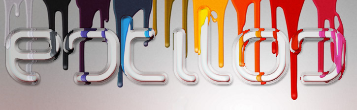

CSS
 De CSS podemos decir que es una tecnología que nos permite crear páginas web de una manera más exacta. Gracias a las CSS somos mucho más dueños de los resultados finales de la página, pudiendo hacer muchas cosas que no se podía hacer utilizando solamente HTML, como incluir márgenes, tipos de letra, fondos, colores
De CSS podemos decir que es una tecnología que nos permite crear páginas web de una manera más exacta. Gracias a las CSS somos mucho más dueños de los resultados finales de la página, pudiendo hacer muchas cosas que no se podía hacer utilizando solamente HTML, como incluir márgenes, tipos de letra, fondos, colores
CSS son las siglas de Cascading Style Sheets, en español Hojas de estilo en Cascada. En este reportaje vamos a ver algunos de los efectos que se pueden crear con las CSS sin necesidad de conocer la tecnología entera.
Para empezar
Las Hojas de Estilo en Cascada se escriben dentro del código HTML de la página web, solo en casos avanzados se pueden escribir en un archivo a parte y enlazar la página con ese archivo. En un principio vamos a utilizar la manera más directa de aplicar estilos a los elementos de la página, mas adelante veremos la declaración en archivos externos. Para ello, y esto es la primera lección de este artículo, vamos a conocer un nuevo atributo que se puede utilizar en casi todas las etiquetas HTML: style.

Ejemplo
Dentro del atributo style se deben indicar los atributos de estilos CSS separados por punto y coma (;). Durante este artículo vamos a conocer muchos atributos de CSS, los dos primeros que hemos visto aquí son:
- color: indica el color del contenido la etiqueta donde estemos utilizándolo, generalmente indica el color del texto.
- font-weight: indica el grosor del texto. Bold sirve para poner en negrita.
Historia del lenguaje CSS
 Es un lenguaje fue desarrollado por la Organización Europea de Investigación Nuclear (CERN) en el año 1945 con la finalidad de desarrollar un sistema de almacenamiento donde las cosas no se perdieran, que pudieran ser conectadas a través de hipervínculos. Primeramente crearon un dispositivo llamado «memex», el cual era considerado como un suplemento para la memoria.
Es un lenguaje fue desarrollado por la Organización Europea de Investigación Nuclear (CERN) en el año 1945 con la finalidad de desarrollar un sistema de almacenamiento donde las cosas no se perdieran, que pudieran ser conectadas a través de hipervínculos. Primeramente crearon un dispositivo llamado «memex», el cual era considerado como un suplemento para la memoria.
Posteriormente, Douglas Engelbart, diseñó un entorno de trabajo por computadora que recibiría el nombre de oNLine System que poseía un catálogo para facilitar la tarea de búsqueda dentro de un mismo organismo.
Recién en 1965, Ted Nelson acuñó el término hipervínculo, ideando una estructura que se encontraba conectada de forma electrónica y que más tarde permitiría la creación de la World Wide Web (1989), un sistema de hipertexto a través del cual era posible compartir una variada información sirviéndose de Internet (servía para la comunicación entre investigadores nucleares que formaran parte del CERN).
El norteamericano Tim Berners-Lee fue el primero en proponer una descripción de HTML en un documento que publicó en 1991. Allí describía veintidós componentes que suponen el diseño más básico y simple del HTML.
El tipo de codificación que se utilizó para el desarrollo de este sistema de hipervínculos debía ser comprendido, tanto por ordenadores tontos como por mega-estaciones, por eso fue necesario crear uno absolutamente simples, tanto en lo que respectaba al lenguaje de intercambio (HTML), como el que hacía referencia al protocolo de red (HTTP).
REFERENCIAS
EDteam 2018
Toado de: desarrolloweb.com https://desarrolloweb.com/articulos/26.php